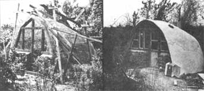

It certainly ain't a mansion, but this cute little concrete dome - built by Jill Abrahamson and Charles Buell In upstate New York - has already provided the young couple with snug quarters through a frigid winter.
The structure rests on a 3'-deep 14"-wide foundation trench that was filled up to ground level with fieldstone and concrete. (Jill and Charles now feel that either a concrete slab or a series of 8" piers spaced two feet apart would have made an adequate - and simpler - foundation.)
The front (facing south, of course, to make the best use of available sunlight) of the concrete cabin was built up first and consists of a "window high" stone wall and wooden framing for a door and two windows. A skeleton of 6"-mesh "road reinforcing wire" was then set up for the dome itself with one layer of 1/2"-mesh chicken wire on its inside and from five to seven layers of 1"-mesh on the outside.
"The tiresome part of the job," say Charles and Jill, "was weaving all that reinforcing material together with soft iron wire ties to form a dense network of mesh about one-half inch thick." Once that chore was completed, though, the two builders erected a wooden framework over the wire mesh skeleton to help it hold its shape until the concrete could be slapped on top.
A mixture of four parts sand to two parts each of portland cement and mortar was used in the cabin's skin. (As it turned out, the mortar was unnecessary, since it didn't add any strength to the mix or make the trowel work any easier.) Jill and Charles - one of them inside and the other out - "worked against" each other to force the concrete completely into the skeleton of wire matting as fast as another couple could mix the "mud" and wheel it to them.
The concrete dome was finished in two days (one would have been better, but would have required more help), and cured under a layer of wet burlap sacks. A fieldstone floor was then laid down on a gravel bass topped with a 4-mil plastic vapor barrier ... and the floor's surface was held above the house's foundation to keep water runoff out of the building. The installation of a 5,000-Btu gas heater (vented through a ferroconcrete chimney), a sink, gas stove, and nearby outhouse pretty much completed the dwelling.
Yes, the dome did leak ... until Charles and Jill gave it two good coats of wall tar. And the couple found it far warmer inside the structure after they stacked bales of straw over the dome for the winter (by now, they've probably given the cabin a permanent layer of "earth sheltering"). In addition to that, the experimenters have decided that the building's interior surface - which was left "glove rough" on purpose - is just a little too abrasive for comfort. "We're going to smooth finish our next dome," they say.
Still - for only a few days' work and around a dollar a square foot of living space - this first Abrahamson/ Buell dome is some bargain for the money. Perhaps it's even given you a few ideas for a storage building, a chickenhouse, a garage ... maybe even a cabin of your own!
|
 |
|
|